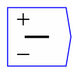

subtract 
Subtract two
numbers. The input ports allow multiple wires, which are summed prior
to the subtraction being carried out. If an input port is unwired, it
is equivalent to setting it to zero. Note the small `+' and `'
signs on the input ports indicating which terms are added or
subtracted from the result.

The operator can be placed on the canvas in two ways:
- From the Binary Operations toolbar; or
- By pressing the minus key anywhere on the wiring canvas, followed by pressing the Enter key, or clicking on OK in the text input window. The reason for requiring the Enter key to be pressed--rather than immediately placing the minus operator on the keyboard, as with the plus and multiply operators--is that a user may wish to enter a negative number as a constant.